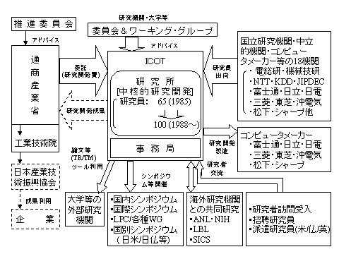

ピュータ技術開発機構の組織は、図３のとおり 前期、中期、後期で異なっている。前期（1982 年度〜1984年度）は、研究員約30名３研究室で あったが、研究規模の増大により中期（1985年 度〜1989年度）は研究員約70名５研究室、後期 （1989年度〜1992年度）は研究員約100名７研 究室となった。 研究所各研究室の構成をみると（表２）、前 期・中期は、研究室長クラスに、通商産業省電 子総合研究所や日本電信電話公社（後に日本電 信電話株式会社）からの中立的な立場の出向者 をあてた。後期は、企業の出向者も室長を努め たが、その場合は前期・中期から(財)新世代コ ンピュータ技術開発機構に属し、能力の上で他 社の出向者からも一目置かれるような人材をあ てた。各室の主任研究員、研究員は、超LSI 技 術研究組合のように室長の出身会社との関係を |
特に考えず（注13）、所長の権限で適材適所を 旨として配置した。また、当プロジェクトは超 LSI 技術研究組合のように 短期的に 各企業へ の成果の還元を迫られるものではなく、全員の 協力で一から作り上げられる雰囲気であった。 このようにして作られた組織は、特に融和を努 めるような対策を講じなくても、自然に研究員 同士の交流が盛んになり、情報伝達が円滑に行 われた。さらに、(財)新世代コンピュータ技術 開発機構は、 超 LSI 技術研究組合でみられた メリットも理解し、大部屋制をとっていた。 以下では、(財)新世代コンピュータ技術開発 機構の 研究体制についての 利点を論ずる（注 14）。 a) 就業規則の柔軟さ 企業によっては、就業時間、特に残業時間に ついて強い枠がはめられているところがある。 |
- 116 -